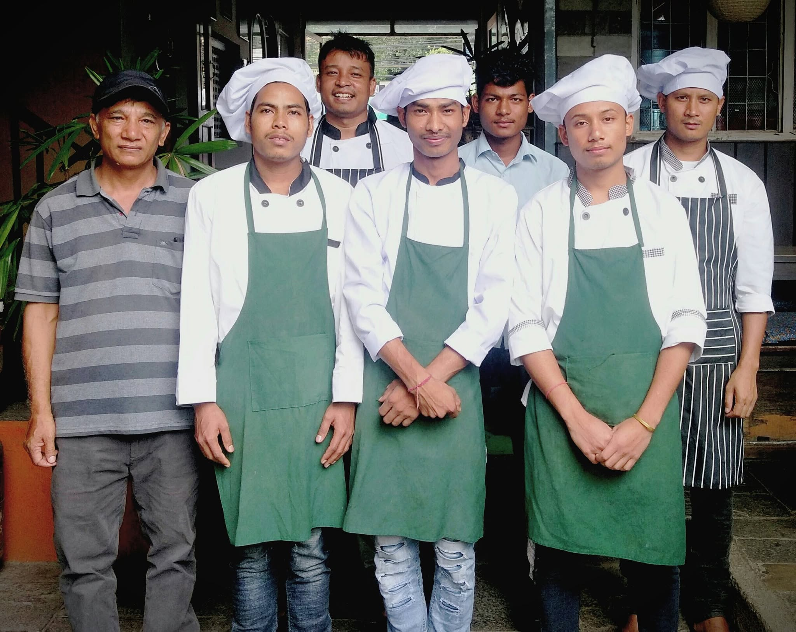

Welcome to Aozora Japanese Restaurant
We are a family owned restuarant in the heart of Pokhara City serving authentic Japanese cuisine. We prepare fresh Tofu, Udon, Ramen, and Soba Noodles in-house.
EST. 2014

A Taste of Aozora
Fresh Udon, Made In-House
Watch our Head Chef prepare fresh Udon Noodles at Aozora.